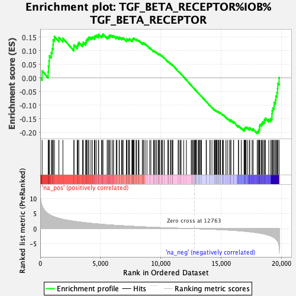

| | | Dataset | expr_RNAseq_ranks |
| Phenotype | NoPhenotypeAvailable |
| Upregulated in class | na_neg |
| GeneSet | TGF_BETA_RECEPTOR%IOB%TGF_BETA_RECEPTOR |
| Enrichment Score (ES) | -0.20449024 |
| Normalized Enrichment Score (NES) | NaN |
| Nominal p-value | NaN |
| FDR q-value | 1.0 |
| FWER p-Value | 0.0 |
Table: GSEA Results Summary

Fig 1: Enrichment plot: TGF_BETA_RECEPTOR%IOB%TGF_BETA_RECEPTOR
Profile of the Running ES Score & Positions of GeneSet Members on the Rank Ordered List
| PROBE | GENE SYMBOL | GENE_TITLE | RANK IN GENE LIST | RANK METRIC SCORE | RUNNING ES | CORE ENRICHMENT | | 1 | PRKCB | | | 154 | 7.545 | 0.0260 | No |
| 2 | ZEB2 | | | 657 | 4.956 | 0.0226 | No |
| 3 | CAMK2A | | | 679 | 4.877 | 0.0434 | No |
| 4 | HDAC1 | | | 730 | 4.751 | 0.0621 | No |
| 5 | FOSB | | | 755 | 4.679 | 0.0818 | No |
| 6 | FOS | | | 912 | 4.326 | 0.0933 | No |
| 7 | MEF2C | | | 989 | 4.188 | 0.1082 | No |
| 8 | HGS | | | 1059 | 4.070 | 0.1229 | No |
| 9 | DDX5 | | | 1069 | 4.062 | 0.1406 | No |
| 10 | SPARC | | | 1174 | 3.890 | 0.1527 | No |
| 11 | TGFBR3 | | | 1544 | 3.431 | 0.1493 | No |
| 12 | ACVRL1 | | | 1876 | 3.097 | 0.1463 | No |
| 13 | VPS39 | | | 2789 | 2.447 | 0.1108 | No |
| 14 | ENG | | | 2794 | 2.444 | 0.1216 | No |
| 15 | MAP4K1 | | | 3060 | 2.296 | 0.1184 | No |
| 16 | PRKCD | | | 3121 | 2.265 | 0.1254 | No |
| 17 | TRAP1 | | | 3196 | 2.231 | 0.1317 | No |
| 18 | DCP1A | | | 3511 | 2.077 | 0.1250 | No |
| 19 | TGFB3 | | | 3563 | 2.054 | 0.1316 | No |
| 20 | SMURF2 | | | 3765 | 1.957 | 0.1301 | No |
| 21 | SMAD7 | | | 3810 | 1.940 | 0.1366 | No |
| 22 | GRB2 | | | 3861 | 1.912 | 0.1426 | No |
| 23 | TGFB1 | | | 3961 | 1.866 | 0.1459 | No |
| 24 | PJA1 | | | 4032 | 1.830 | 0.1505 | No |
| 25 | JUN | | | 4204 | 1.762 | 0.1497 | No |
| 26 | DAB2 | | | 4324 | 1.718 | 0.1513 | No |
| 27 | SNW1 | | | 4490 | 1.662 | 0.1504 | No |
| 28 | MYC | | | 4537 | 1.643 | 0.1554 | No |
| 29 | SNIP1 | | | 4650 | 1.595 | 0.1568 | No |
| 30 | EWSR1 | | | 4823 | 1.537 | 0.1550 | No |
| 31 | DYNC1I1 | | | 4845 | 1.531 | 0.1608 | No |
| 32 | TGFBR2 | | | 5078 | 1.447 | 0.1554 | No |
| 33 | ZEB1 | | | 5153 | 1.419 | 0.1580 | No |
| 34 | ANAPC5 | | | 5199 | 1.405 | 0.1620 | No |
| 35 | E2F4 | | | 5544 | 1.302 | 0.1503 | No |
| 36 | ANAPC2 | | | 5633 | 1.274 | 0.1515 | No |
| 37 | ARRB2 | | | 5708 | 1.252 | 0.1534 | No |
| 38 | PTK2 | | | 5734 | 1.244 | 0.1577 | No |
| 39 | RAF1 | | | 5849 | 1.208 | 0.1573 | No |
| 40 | HSPA8 | | | 5996 | 1.166 | 0.1551 | No |
| 41 | MAP2K6 | | | 6080 | 1.144 | 0.1560 | No |
| 42 | SKIL | | | 6295 | 1.085 | 0.1499 | No |
| 43 | TAB1 | | | 6357 | 1.069 | 0.1516 | No |
| 44 | CDK4 | | | 6538 | 1.023 | 0.1470 | No |
| 45 | ATF3 | | | 6564 | 1.017 | 0.1503 | No |
| 46 | RBL1 | | | 6746 | 0.975 | 0.1455 | No |
| 47 | ETS1 | | | 6792 | 0.966 | 0.1475 | No |
| 48 | STK11IP | | | 6876 | 0.950 | 0.1475 | No |
| 49 | AXIN2 | | | 7134 | 0.890 | 0.1384 | No |
| 50 | MEF2A | | | 7178 | 0.880 | 0.1402 | No |
| 51 | KAT2B | | | 7180 | 0.879 | 0.1440 | No |
| 52 | NFYC | | | 7316 | 0.850 | 0.1410 | No |
| 53 | RUNX2 | | | 7351 | 0.843 | 0.1430 | No |
| 54 | BRCA1 | | | 7401 | 0.831 | 0.1442 | No |
| 55 | WWTR1 | | | 7594 | 0.787 | 0.1380 | No |
| 56 | ESR1 | | | 7642 | 0.778 | 0.1391 | No |
| 57 | PML | | | 7663 | 0.775 | 0.1415 | No |
| 58 | CDK2 | | | 7676 | 0.771 | 0.1444 | No |
| 59 | STK11 | | | 7719 | 0.762 | 0.1457 | No |
| 60 | FKBP1A | | | 7778 | 0.749 | 0.1461 | No |
| 61 | DAXX | | | 7937 | 0.713 | 0.1412 | No |
| 62 | PRKAR1B | | | 7980 | 0.704 | 0.1422 | No |
| 63 | STAMBPL1 | | | 8125 | 0.673 | 0.1379 | No |
| 64 | AP2B1 | | | 8186 | 0.660 | 0.1378 | No |
| 65 | SDC2 | | | 8461 | 0.605 | 0.1266 | No |
| 66 | TGIF1 | | | 8462 | 0.605 | 0.1293 | No |
| 67 | NUP214 | | | 8553 | 0.588 | 0.1273 | No |
| 68 | SMAD3 | | | 8571 | 0.584 | 0.1291 | No |
| 69 | RHOA | | | 8690 | 0.565 | 0.1256 | No |
| 70 | CCND1 | | | 8843 | 0.536 | 0.1202 | No |
| 71 | CCNB2 | | | 9073 | 0.496 | 0.1108 | No |
| 72 | EP300 | | | 9172 | 0.478 | 0.1079 | No |
| 73 | SKI | | | 9390 | 0.438 | 0.0988 | No |
| 74 | JUNB | | | 9423 | 0.433 | 0.0992 | No |
| 75 | CAV1 | | | 9467 | 0.427 | 0.0989 | No |
| 76 | TP73 | | | 9573 | 0.410 | 0.0954 | No |
| 77 | LEF1 | | | 9666 | 0.397 | 0.0925 | No |
| 78 | SHC1 | | | 9806 | 0.377 | 0.0871 | No |
| 79 | MAPK8 | | | 9811 | 0.376 | 0.0886 | No |
| 80 | HOXA9 | | | 9837 | 0.372 | 0.0889 | No |
| 81 | E2F5 | | | 9879 | 0.364 | 0.0885 | No |
| 82 | SNX1 | | | 10015 | 0.345 | 0.0832 | No |
| 83 | CAMK2G | | | 10070 | 0.336 | 0.0819 | No |
| 84 | SNX2 | | | 10150 | 0.321 | 0.0793 | No |
| 85 | CREBBP | | | 10286 | 0.303 | 0.0738 | No |
| 86 | SPTBN1 | | | 10582 | 0.263 | 0.0600 | No |
| 87 | ANAPC7 | | | 10601 | 0.261 | 0.0602 | No |
| 88 | SMURF1 | | | 10622 | 0.257 | 0.0603 | No |
| 89 | NCOA1 | | | 10787 | 0.234 | 0.0530 | No |
| 90 | AKT1 | | | 10789 | 0.234 | 0.0540 | No |
| 91 | MED15 | | | 10900 | 0.220 | 0.0494 | No |
| 92 | CDC23 | | | 10983 | 0.209 | 0.0462 | No |
| 93 | ANAPC1 | | | 10985 | 0.209 | 0.0471 | No |
| 94 | ITCH | | | 11427 | 0.154 | 0.0253 | No |
| 95 | PDK1 | | | 11489 | 0.145 | 0.0228 | No |
| 96 | TGFBR1 | | | 11605 | 0.129 | 0.0175 | No |
| 97 | PIAS1 | | | 11677 | 0.118 | 0.0145 | No |
| 98 | CTNNB1 | | | 11887 | 0.094 | 0.0042 | No |
| 99 | FOXO4 | | | 12113 | 0.063 | -0.0070 | No |
| 100 | ZFYVE9 | | | 12514 | 0.024 | -0.0272 | No |
| 101 | ANAPC4 | | | 12564 | 0.019 | -0.0296 | No |
| 102 | SMAD4 | | | 12647 | 0.011 | -0.0338 | No |
| 103 | RBL2 | | | 12725 | 0.003 | -0.0377 | No |
| 104 | FOXO1 | | | 12789 | -0.002 | -0.0409 | No |
| 105 | IRF2BP1 | | | 12851 | -0.010 | -0.0439 | No |
| 106 | BCAR1 | | | 12882 | -0.014 | -0.0454 | No |
| 107 | XPO1 | | | 12888 | -0.014 | -0.0456 | No |
| 108 | FZR1 | | | 12936 | -0.021 | -0.0479 | No |
| 109 | PARD3 | | | 12938 | -0.021 | -0.0478 | No |
| 110 | BTRC | | | 13087 | -0.037 | -0.0552 | No |
| 111 | SKP1 | | | 13140 | -0.042 | -0.0577 | No |
| 112 | ATF2 | | | 13197 | -0.047 | -0.0603 | No |
| 113 | SOS1 | | | 13243 | -0.054 | -0.0624 | No |
| 114 | CDC25A | | | 13325 | -0.062 | -0.0662 | No |
| 115 | CDKN1A | | | 13360 | -0.066 | -0.0677 | No |
| 116 | COPS5 | | | 13751 | -0.115 | -0.0870 | No |
| 117 | TFDP2 | | | 13777 | -0.118 | -0.0877 | No |
| 118 | CDK1 | | | 14062 | -0.159 | -0.1015 | No |
| 119 | CDK6 | | | 14074 | -0.161 | -0.1013 | No |
| 120 | MAPK3 | | | 14232 | -0.184 | -0.1085 | No |
| 121 | NFYA | | | 14419 | -0.215 | -0.1170 | No |
| 122 | TP53 | | | 14444 | -0.218 | -0.1173 | No |
| 123 | RB1 | | | 14521 | -0.230 | -0.1201 | No |
| 124 | NUP153 | | | 14531 | -0.233 | -0.1195 | No |
| 125 | SNX6 | | | 14590 | -0.246 | -0.1214 | No |
| 126 | STRAP | | | 14634 | -0.254 | -0.1224 | No |
| 127 | UBE2D3 | | | 14653 | -0.258 | -0.1222 | No |
| 128 | RNF111 | | | 14746 | -0.276 | -0.1256 | No |
| 129 | CDC27 | | | 14754 | -0.277 | -0.1248 | No |
| 130 | CCNE1 | | | 14775 | -0.281 | -0.1245 | No |
| 131 | PXN | | | 14882 | -0.301 | -0.1286 | No |
| 132 | CTCF | | | 14911 | -0.306 | -0.1286 | No |
| 133 | CD44 | | | 14939 | -0.312 | -0.1286 | No |
| 134 | XPO4 | | | 15090 | -0.339 | -0.1347 | No |
| 135 | DVL1 | | | 15117 | -0.344 | -0.1345 | No |
| 136 | AXIN1 | | | 15196 | -0.359 | -0.1369 | No |
| 137 | EIF3I | | | 15388 | -0.399 | -0.1448 | No |
| 138 | PIAS2 | | | 15511 | -0.431 | -0.1491 | No |
| 139 | AR | | | 15668 | -0.468 | -0.1550 | No |
| 140 | CUL1 | | | 15782 | -0.493 | -0.1585 | No |
| 141 | FNTA | | | 15791 | -0.496 | -0.1567 | No |
| 142 | ROCK1 | | | 15793 | -0.497 | -0.1545 | No |
| 143 | PARD6A | | | 16023 | -0.559 | -0.1637 | No |
| 144 | KPNB1 | | | 16029 | -0.560 | -0.1614 | No |
| 145 | YAP1 | | | 16420 | -0.670 | -0.1783 | No |
| 146 | CAMK2D | | | 16439 | -0.675 | -0.1762 | No |
| 147 | NEDD4L | | | 16659 | -0.753 | -0.1840 | No |
| 148 | SNX4 | | | 16892 | -0.828 | -0.1921 | No |
| 149 | CAMK2B | | | 16905 | -0.832 | -0.1889 | No |
| 150 | VDR | | | 16925 | -0.838 | -0.1862 | No |
| 151 | MAP2K3 | | | 16965 | -0.854 | -0.1843 | No |
| 152 | PIK3R1 | | | 16997 | -0.865 | -0.1820 | No |
| 153 | MAPK14 | | | 17059 | -0.885 | -0.1812 | No |
| 154 | ZFYVE16 | | | 17177 | -0.936 | -0.1829 | No |
| 155 | TGFB2 | | | 17333 | -0.999 | -0.1864 | No |
| 156 | SUMO1 | | | 17366 | -1.013 | -0.1835 | No |
| 157 | MAP3K7 | | | 17559 | -1.104 | -0.1883 | No |
| 158 | UBE2D1 | | | 17641 | -1.149 | -0.1873 | No |
| 159 | ING2 | | | 17980 | -1.340 | -0.1985 | Yes |
| 160 | TFDP1 | | | 18064 | -1.387 | -0.1965 | Yes |
| 161 | GIPC1 | | | 18102 | -1.416 | -0.1920 | Yes |
| 162 | CITED1 | | | 18155 | -1.451 | -0.1882 | Yes |
| 163 | MAPK1 | | | 18180 | -1.467 | -0.1828 | Yes |
| 164 | CSNK1G2 | | | 18186 | -1.471 | -0.1765 | Yes |
| 165 | FOXO3 | | | 18208 | -1.487 | -0.1709 | Yes |
| 166 | PRKAR2A | | | 18333 | -1.573 | -0.1702 | Yes |
| 167 | DYNLRB2 | | | 18381 | -1.606 | -0.1654 | Yes |
| 168 | SP1 | | | 18452 | -1.676 | -0.1614 | Yes |
| 169 | NME1 | | | 18555 | -1.772 | -0.1587 | Yes |
| 170 | EID2 | | | 18594 | -1.803 | -0.1526 | Yes |
| 171 | JUND | | | 18664 | -1.880 | -0.1476 | Yes |
| 172 | CDC16 | | | 18939 | -2.188 | -0.1518 | Yes |
| 173 | ANAPC10 | | | 19100 | -2.415 | -0.1491 | Yes |
| 174 | DYNLRB1 | | | 19202 | -2.608 | -0.1426 | Yes |
| 175 | UCHL5 | | | 19204 | -2.619 | -0.1309 | Yes |
| 176 | ERBB2IP | | | 19227 | -2.648 | -0.1202 | Yes |
| 177 | CRK | | | 19284 | -2.766 | -0.1106 | Yes |
| 178 | PPP2R2A | | | 19381 | -2.963 | -0.1023 | Yes |
| 179 | SMAD2 | | | 19389 | -2.986 | -0.0892 | Yes |
| 180 | RBX1 | | | 19508 | -3.322 | -0.0804 | Yes |
| 181 | SOX9 | | | 19532 | -3.440 | -0.0661 | Yes |
| 182 | UBE2D2 | | | 19617 | -3.798 | -0.0534 | Yes |
| 183 | NFYB | | | 19671 | -4.110 | -0.0377 | Yes |
| 184 | PPM1A | | | 19690 | -4.216 | -0.0197 | Yes |
| 185 | PPP2CA | | | 19794 | -5.799 | 0.0010 | Yes |
Table: GSEA details [plain text format]
Fig 2: TGF_BETA_RECEPTOR%IOB%TGF_BETA_RECEPTOR: Random ES distribution
Gene set null distribution of ES for TGF_BETA_RECEPTOR%IOB%TGF_BETA_RECEPTOR